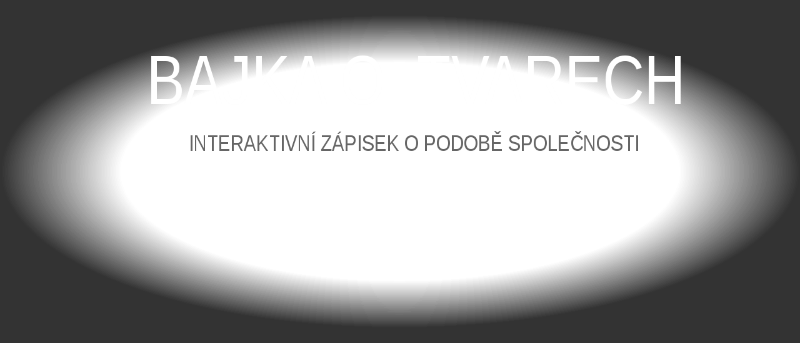
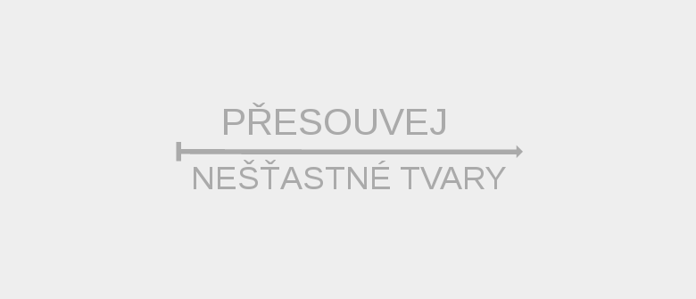
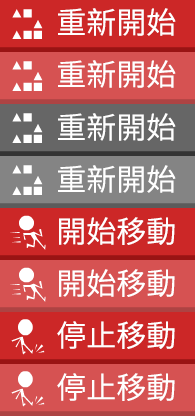
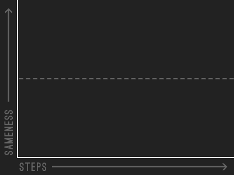

This page creates translated images used by Parable of the Polygons. To make your own translation, translate this page’s source code, adjust font sizes and positions, then click the button to download the translated image. Mouse over to see the original.
Fonts: Ostrich Sans, Ostrich Sans Black, Ostrich Sans Light by the League of Movable Type.
   